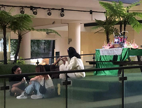
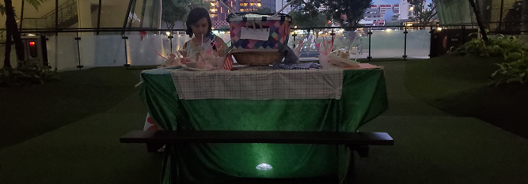
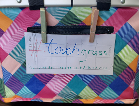
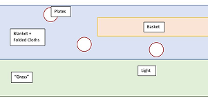
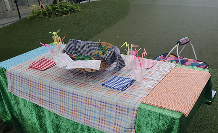

Touch Grass: A Nostalgic Picnic and the Reclamation of Space

Touch Grass combines synthetic turf, gingham fabric, and digital tags to stage an artificial outdoor gathering inside the gallery. Here, familiar materials associated with picnics and leisure acquire new meanings within a constructed environment. Bringing tactile textures and digital representation into the same room prompts visitors to examine how memory, sensory association, and material contrasts shape the personal and social meaning of place.
- Format: Experimental installation and spatial media
- Context: Tropical Lab, Singapore, 2023




